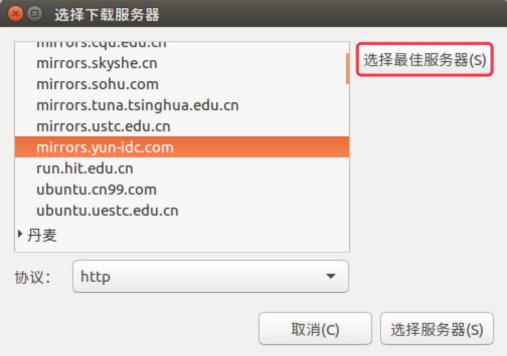

1. 安装前的准备和基本安装
1.1 安装前的准备
- 访问 http://cn.ubuntu.com/download/ 下载 Ubuntu 16.04 版本
- 在操作系统上安装
VMWare虚拟机软件
为什么要使用虚拟机？
- 不需要准备 额外的电脑
- 在虚拟机中可以 大胆尝试任何操作，不用担心造成不可逆转的破坏
1.2 基本安装
- 有了映像文件之后，只需要按照提示一步一步操作即可安装 Ubuntu 了
- 提示，在开始安装之前，请确认勾选了 在虚拟机中访问个人文件夹，如下图所示：

该选项可以方便地实现在 虚拟机 和 个人电脑 之间共享文件
- 安装结束后，登录并且进入系统，可以看到以下画面：

2. 设置语言环境
按照以下步骤操作可以修改 ubuntu 的语言环境
- 1) 进入 系统设置 System Settings
- 2) 打开 语言支持 Language Support
- 3) 通过 安装/删除语言 Install/Remove Languages 添加 简体中文 Chinese(simplified)
- 4) 将 汉语 拖拽到 顶部，如下图所示：

- 5) 重新启动系统
- 6) 不 修改文件夹的名称，如下图所示：
3. 安装常用软件
- 3.1 设置服务器镜像源
- 3.2 在启动栏添加 终端 图标
- 3.3 apt 终端命令
- 3.4 谷歌浏览器 chrome
- 3.5 搜狗输入法
3.1 设置服务器镜像源
- Ubuntu 中 大部分 的软件 安装/更新 都是利用
apt命令，从 ubuntu 的服务器 直接安装的 - Ubuntu 官方的服务器在国外，为了提高软件 安装/更新速度，ubuntu 提供了 选择最佳服务器 的功能，可以帮助我们方便的找到一个速度最快的 镜像服务器！
所谓 镜像服务器，就是 所有服务器的内容是相同的（镜像），但是根据所在位置不同，速度不同，通常国内服务器速度会更快一些！
按照以下步骤操作可以设置 ubuntu 的服务器
- 1) 进入 系统设置
- 2) 打开 软件和更新
- 3) 设置 下载自… 其他站点
- 4) 通过 选择最佳服务器 选择速度最快的 镜像源，如下图所示：

提示：更换服务器之后，需要一个相对比较长时间的更新过程，需要耐心等待。更新完成后，再安装软件都会从新设置的服务器下载软件了
3.2 在启动栏添加 终端 图标
- Ubuntu 的 启动栏 类似于 Windows 的 任务栏，可以显示 常用软件图标 和 正在运行的软件图标
- 通常 Linux 的用户使用 终端命令 的频率非常高，所以会把 终端 添加到 启动栏
- 通过最上方的 搜索 按钮可以 搜索并启动 需要使用的程序
- 点击右键 可以 保留、删除 或者 移动 启动栏中图标
- 可以把最常用的软件图标，保留 在启动栏，可以方便快速启动程序
3.3 apt 终端命令
apt是Advanced Packaging Tool，是 Ubuntu 下的 安装包管理工具- 大部分 的软件 安装/更新/卸载 都是利用
apt命令来实现的 - 直接在终端中输入
apt即可以查阅命令的帮助信息 - 常用命令如下：
1 | # 1. 安装软件 |
1) 软件更新和升级
- 通常安装完 ubuntu 之后，可以先使用
upgrade更新一下当前系统中可以升级的的软件包
1 | $ sudo apt update |
- 提示 如果增加、更换了软件源，通常需要使用
update更新一下本地缓存
2) 安装常用工具
提示 apt 安装命令的格式是不需要记忆的，如果在终端中输入的软件没有安装，系统会提示 apt 命令 的使用格式
python 程序员
1 | $ sudo apt install ipython |
C++ 程序员
1 | $ sudo apt install cmake |
ruby 程序员
1 | $ sudo apt install ruby |
安装 ssh 服务器
1 | sudo apt install openssh-server |
安装之后，才可以在其他系统中，通过 ssh 工具远程登陆
3) 删除不使用的软件
libreoffice
libreoffice是一套类似于微软 Office的 免费的 办公套件- 不过无论是界面交互还是执行性能都还有很大的提升空间
- 卸载 libreoffice 可以释放大概 300M 的磁盘空间
1 | $ sudo apt remove libreoffice-common |
Amazon
1 | $ sudo apt remove unity-webapps-common |
4) 扩展：apt 和 apt-get
apt和apt-get都是 ubuntu 下常用的安装软件的命令- 早期 使用
apt-get，从 ununtu 16 开始，官方建议使用apt - 这两个命令的 使用方式非常类似
3.4 deb 安装格式
deb 是 Debian Linux 的安装格式，在 ubuntu 中同样可以使用。要安装 deb 安装包，需要使用 dpkg 这个终端命令，命令格式如下：
1 | $ sudo dpkg -i <package.deb> |
1) 谷歌浏览器
- 从 https://dl.google.com/linux/direct/google-chrome-stable_current_amd64.deb 下载最新版本的安装文件
- 在终端中执行以下命令：
1 | $ sudo apt install libappindicator1 libindicator7 |
2) 搜狗输入法
fcitx 被称为 小企鹅输入法，是一个以 GPL 方式发布的 输入法平台，可以通过安装引擎支持多种输入法。它的优点是，短小精悍、跟程序的兼容性比较好！
- 打开 系统设置 语言支持
- 将 键盘输入法系统 修改为 fcitx
- 访问网站 http://pinyin.sogou.com/linux/ 下载最新版本的安装文件
- 在终端中执行以下命令：
1 |
|
提示，安装输入法之后，需要重新启动系统